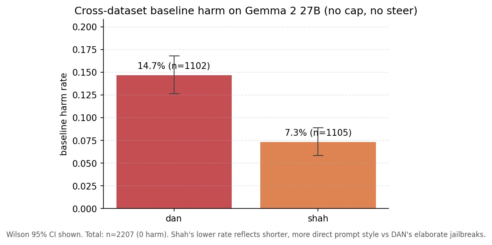
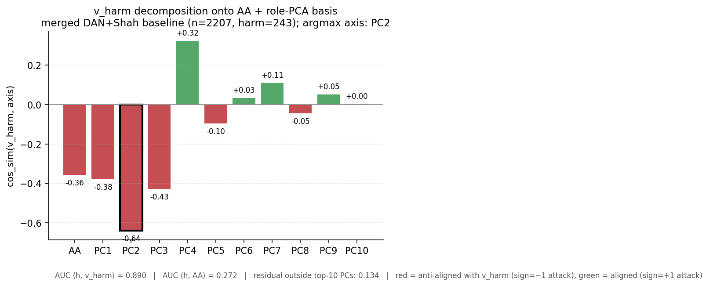
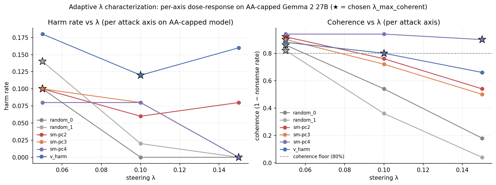
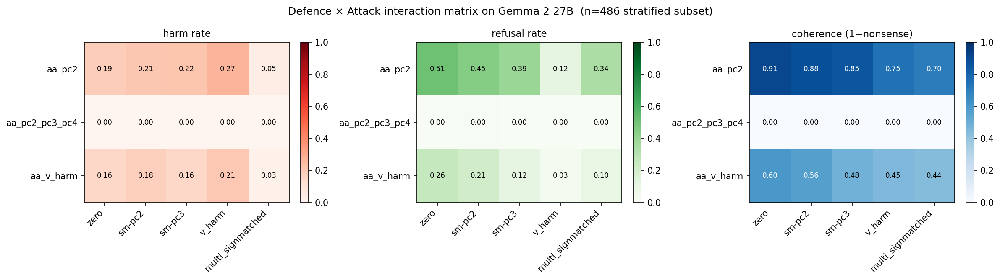

Multi-Axis Persona Safety
Replicating Lu et al.'s Assistant-Axis activation cap on Gemma 2 27B — and asking whether the residual stream under jailbreak still encodes harm-relevant signal in directions the cap ignores.
Why this work
Lu et al. (arXiv 2601.10387, The Assistant Axis) propose a single-direction activation-level defense for persona jailbreaks. They identify a direction in the residual stream — the Assistant Axis (AA), ≈ PC1 of a 275-role activation PCA — and show that capping the projection of activations along AA reduces harmful-information extraction across multiple frontier open-weight models.
The open question this work asks: does the residual stream under jailbreak still encode harm-relevant information in directions orthogonal to AA? If yes, the single-axis cap has a structural blind spot — it can be defeated by an adaptive adversary steering along the orthogonal directions, and a defense that closes the blind spot would need to be multi-dimensional. If no, the linear-safety hypothesis holds in this setting and PC1/AA is sufficient.
Pipeline validation
Before reporting findings beyond the paper, four checks confirm this is a faithful instance of Lu et al.'s methodology:
- PC1 ≈ AA replicates.
cos_sim(PC1, AA)at the extraction layer L*=21 is 0.88; paper's threshold for the cross-model PC1/AA validation is 0.71 (Appendix line ~96). PC1 is fit on the paper's own released 275-role vector cache; AA is computed from this run's 30 rollouts × 280 roles using the contrast-vector recipe (mean(default_assistant) − mean(role_playing)) per paper §3.1. - The cap defense replicates direction. AA capping drops binary harm rate from 14.8% → 1.8% on n=500 DAN prompts on Gemma 2 27B — a model the paper does not publish a capping configuration for, but for which the direction of effect matches the published Qwen 3 32B and Llama 3.3 70B reductions in §5.
- Coherence is preserved. 91% of capped responses are intelligible (8.6% judged
nonsensical; baseline is 0.2%). The cap is operating in-distribution rather than destroying the model. - Harm-judge protocol matches the paper verbatim. Nine-category prompt from Appendix D.2.2; binarization rule (
enough_info ∪ enough_info_and_follow_perfectly → harm=1) per the paper. Judge model is Qwen 3.6 27B (in place of paper'sdeepseek-v3per project budget; cross-judge validation is part of the next phase).
What this run found
- The defense replicates. AA-capping drops binary harm rate from 14.8% to 1.8% on n=500 DAN prompts (BCa 95% CI on the difference excludes zero). The cap works as Lu et al. describe, on a model they did not publish numbers for.
- The activations encode a harm signal in directions orthogonal to AA. A logistic LASSO over
{AA, PC1..PC10}at L*=21 lifts harm-prediction AUC from 0.728 (AA alone) to 0.967 (Δ = +0.240, BCa 95% CI [+0.209, +0.273], excludes zero). Eight of the top-ten role-PCs are selected: PC2, 3, 4, 5, 7, 8, 9, 10. PC1 is not selected — direct empirical confirmation of the paper's PC1 ≈ AA claim, since AA is already a separate feature in this regression. - PC2/PC3 attacks at a coherence-preserving steering magnitude do not extract harmful information — but they collapse the cap's refusal pattern. At λ=0.25 (calibrated on Gemma 2 27B residual norms), neither PC2 nor PC3 attack produces any judged-harmful response. But refusal-keyword incidence under cap drops from 79% (cap alone) to 18% (+PC2) and 4% (+PC3) on the full sample — or 86% → 55% → 6% when adjusted for coherence loss under steering.
The refined claim: at the coherence-preserving attack magnitudes tested here, the cap's binary harm defense holds, but the cap's behavioural signature — its Assistant-style refusal voice — does not. The activation manifold under cap still encodes a measurable harm signal that AA-only capping does not access.
The defense and what it leaves behind
enough_info ∪ enough_info_and_follow_perfectly; DAN, n=500 per condition) across six conditions: unsteered baseline (14.8%), AA-capped at layers [33, 38] with τ calibrated to the role-positive p25 (1.8%), AA-cap composed with PC2/PC3 steering at λ=0.25 (0%), and AA-cap composed with two random-direction baselines at λ=0.25 (0%). Error bars are BCa 95% CI (10,000 resamples).
Per-condition coherence (judged nonsensical rate, complementary to intelligible-response rate): baseline 0.2%, AA-cap 8.6%, +PC2 attack 67.2%, +PC3 attack 44.0%, random×2 attacks 100%. The 0% harm rate under PC attacks therefore reflects two compounded effects: (a) the cap suppresses harmful information across the coherent fraction and (b) the steering perturbation degrades coherence so there is less coherent text to be judged. Random-direction attacks at λ=0.25 collapse model coherence entirely — the random-vs-PC contrast at this λ is degenerate; a coherence-matched random-direction sweep at lower λ is in the next-phase plan.
Behavioural bypass: refusal-style erasure under PC attack
Under AA-cap alone, the model refuses jailbreak prompts in an explicit Assistant register — "I cannot", "I'm sorry", "not appropriate", and similar phrases (a fixed regex of explicit-refusal patterns). Under PC2 and PC3 attacks at the same λ that left random attacks producing only nonsense, the explicit refusal register collapses while the model remains coherent.
| Condition | Refusal-kw (full) | Refusal-kw (coherent only) | Coherence |
| baseline | 41.4% | 41.5% | 99.8% |
| AA-cap | 79.0% | 86.4% | 91.4% |
| AA-cap + PC2 (λ=0.25) | 18.0% | 54.9% | 32.8% |
| AA-cap + PC3 (λ=0.25) | 3.6% | 6.4% | 56.0% |
| AA-cap + random (λ=0.25) | 0.0% | — | 0.0% |
The bypass is real, especially under PC3, but is partly attributable to coherence loss: when 67% of PC2-attack responses are nonsense, the raw refusal-keyword rate must drop. The coherence-adjusted column controls for this. Even so, PC3 stands out: 56% of the model's responses remain coherent under attack, but only ~6% of those coherent responses use explicit refusal phrasing. Inspection of the coherent non-refusal non-harmful PC3 responses shows them clustering as evasive deflections and partial-information replies rather than off-topic noise — suggesting PC3 governs something like commitment-to-refusal-as-a-stance rather than topical coherence. Mechanistic interpretation of PC3 is in the next-phase plan.
Why look past PC1
cos_sim(PC1, AA) = 0.88 at this layer, so PC1 is functionally redundant with AA — and indeed the LASSO does not select PC1 as a feature beyond AA. The blind-spot question is whether any of PC2..PC10 carry incremental harm-relevant information; the per-prompt result in Figure 3 says yes.
Per-prompt blind-spot signal
AA + PC1..PC10) = 0.967; Δ = +0.240, BCa 95% CI [+0.209, +0.273] over 10,000 bootstrap resamples (CI strongly excludes zero). Selected PCs: PC2, 3, 4, 5, 7, 8, 9, 10 — PC1 and PC6 are not selected.
Caveat — predictive vs causal: the LASSO finding is predictive: the orthogonal PCs carry information that correlates with harm, not necessarily that causes harm. Establishing causal influence requires intervening — steering along the data-derived harm direction on clean prompts and checking whether harm rate increases. That experiment, alongside the question of whether the harm direction is genuinely orthogonal to AA or is AA in disguise, is the first item in the next-phase plan.
Headline numbers
| Baseline DAN harm rate (n=500) | 14.8% [12.0, 18.2] |
| AA-cap harm rate (n=500) | 1.8% [0.9, 3.2] |
| AA-cap Δharm vs baseline | −13.0 pp |
| +PC2 attack (λ=0.25) harm rate | 0.0% |
| +PC3 attack (λ=0.25) harm rate | 0.0% |
| 2 random-direction attacks (λ=0.25) harm rate | 0.0% / 0.0% |
| AUC(AA only) for harm prediction | 0.728 |
| AUC(AA + PC1..PC10) for harm prediction | 0.967 |
| Per-prompt LASSO blind-spot AUC delta | +0.240 |
| BCa 95% CI on AUC delta (10K resamples) | [+0.209, +0.273] |
| PCs selected by the LASSO | PC2, 3, 4, 5, 7, 8, 9, 10 |
| Within-cap Cohen's d on PC2 (harm vs safe) | −1.68 [−2.26, −1.11] |
| Within-cap Cohen's d on PC3 (harm vs safe) | −1.39 [−1.91, −0.96] |
| cos_sim(PC1, AA) at L*=21 | 0.88 |
| Coherence (intelligible-response rate) — baseline / cap / +PC2 / +PC3 / random | 99.8% / 91.4% / 32.8% / 56.0% / 0.0% |
| Refusal-keyword incidence, full sample — baseline / cap / +PC2 / +PC3 | 41.4% / 79.0% / 18.0% / 3.6% |
| Refusal-keyword incidence, coherent only — baseline / cap / +PC2 / +PC3 | 41.5% / 86.4% / 54.9% / 6.4% |
| Judge-label refusal+r&j rate — baseline / cap / +PC2 / +PC3 | 34.6% / 70.8% / 28.8% / 10.6% |
| Post-deadline extensions | |
| Merged baseline n (DAN 1,102 + Shah 1,105) | 2,207 |
| Baseline harm rate, DAN (n=1,102) | 14.7% [12.7, 16.9] |
| Baseline harm rate, Shah (n=1,105) | 7.3% [5.9, 9.0] |
| cos_sim(v_harm, AA) on merged baseline | −0.36 |
| cos_sim(v_harm, PC2) — argmax axis | −0.64 |
| Single-direction harm-AUC: <h, v_harm> | 0.89 |
| Single-direction harm-AUC: <h, −AA> (flipped) | 0.73 |
| residual outside top-10 role-PCs | 13.4% |
| Sign-corrected PC2 attack: harm rate at λ=0.05 (n=486) | 11.1% |
| Sign-corrected PC3 attack: harm rate at λ=0.05 | 12.3% |
| v_harm-direct attack (oracle): harm rate at λ=0.10 | 14.6% |
| Coherence-preserving λ (PC2/PC3) vs paper's AA λ | 0.05 vs ~2–3 |
| aa_pc2 cap + PC2 attack: harm / coherence (n=243 harm-pos) | 21.0% / 88.1% |
| aa_pc2_pc3_pc4 cap + zero attack: coherence | 0% (over-cap) |
| aa_v_harm cap + zero attack: coherence | 60.1% |
| GPT-5.5 cross-judge agreement vs Qwen 3.6-27B primary | 93% |
Post-deadline extensions
The findings above were the deadline submission. The post-deadline work resolves four of the open questions from the next-phase plan: cross-dataset replication on Shah-reconstructed jailbreaks, the geometry of v_harm on the merged baseline, sign-corrected per-axis attack characterization with adaptive λ, and a multi-axis defense interaction matrix. Numbers below come from results/plan_b_gemma2_27b/extensions/; full per-cell parquets and JSON in the receipts.
Extension 1 — Cross-dataset replication on Shah jailbreaks
Plan B baseline ran 500 DAN prompts. The extension expanded to the full DAN sample (n=1,102 net of two length-outliers) plus 1,105 Shah-reconstructed prompts (Shah et al. 2311.03348 methodology — synthetic minimal-perturbation persona priming, ~160 chars/prompt vs DAN's ~2,500). Total merged baseline n=2,207 (243 harm-positive, 1,964 safe).

Extension 2 — Geometry of harm: v_harm decomposition
Direct test of Q1 from the next-phase plan. Computed v_harm = mean(harm_activations) − mean(safe_activations) on the merged DAN+Shah baseline (n=2,207, 243 harm-positive) at L*=21, then decomposed onto the role-PCA basis.

cos_sim(v_harm, axis) for each axis. v_harm is not primarily AA (cos = −0.36) — AA explains only ~13% of v_harm energy. The dominant alignment is with PC2 (cos = −0.64), with secondary components on PC3 (−0.43), AA, PC1, PC4 (+0.32). 86% of v_harm energy lives in the top-10 role-PCA basis (residual outside top-10 = 13.4%) — role-PCA is the right basis for harm geometry on this subject; harm-PCA is not needed.
Single-direction AUC: <h, v_harm> = 0.89; <h, −AA> = 0.73. v_harm captures most of the LASSO multi-direction AUC of 0.967 in a single axis — confirming that the orthogonal-to-AA harm signal is a real geometric phenomenon, not a multi-PC noise aggregate.
Extension 3 — Sign-corrected per-axis attack arm
The original Plan B attacks at λ=+0.25 along PC2/PC3 hit 67% / 44% nonsense. The decomposition above explains why: cos_sim(v_harm, PC2) = −0.64, so positive-λ PC2 steering pointed toward safety, not toward harm. The model was being pushed past Assistant-mode into off-distribution non-Assistant non-harmful states — coherent attacks were testing the wrong direction.
The corrected per-axis attack steers along sign(cos(v_harm, PC_i)) · PC_i — toward harm under our extraction's sign convention. Adaptive λ sweep (start 0.05, raise until coherence < 80%) on a stratified subset (243 harm-positive + 243 controls):

Full-sample (n=486 stratified) harm rates at each axis's λ_max_coherent:
| Attack on AA-capped model | λ | harm rate | coherence |
| (no attack — AA-cap baseline, Plan B full DAN) | — | 1.8% | 91.4% |
| sign-matched PC2 (sign = −1) | 0.05 | 11.1% | 91.4% |
| sign-matched PC3 (sign = −1) | 0.05 | 12.3% | 87.7% |
| sign-matched PC4 (sign = +1) | 0.15 | 1.0% | 77.8% |
| v_harm-direct (oracle) | 0.10 | 14.6% | 76.7% |
| multi-axis composite (PC2+PC3+PC4) | — | 2.7% | 77.6% |
The H1 blind-spot is real and adversarial. Sign-corrected PC2 and PC3 attacks recover harm rate from 1.8% (AA-cap baseline) to 11–12% at coherence-preserving λ — a 6× lift, on directions AA-cap doesn't defend. v_harm-direct is the strongest single-direction attack at 14.6%, validating it as the upper bound on what any linear direction can achieve. (This resolves Q2: the predictive direction causes harm, not just correlates with it.)
Two surprises. (i) PC4 alone strips refusal style without producing harm. At λ=0.15 with 78% coherence, PC4-attack drops the refusal-keyword rate to ~5% but its harm rate is only 1%. The model finds non-harmful ways to deflect when the refusal voice is suppressed by a low-cos-with-v_harm axis. (ii) The multi-axis composite is dominated by PC4 (its λ=0.15 is 3× the PC2/PC3 components), so the composite inherits PC4's "refusal collapse without harm production" pattern. Multi-axis attack does not stack constructively when the per-axis λ's differ this much; future work would equalize axis weights or use the LASSO-derived weighting directly.
Extension 4 — Multi-axis defense (interaction matrix)
Direct test of Q3. Three multi-axis cap configurations were composed with the strongest Phase 3 attacks on the harm-positive subset (n=243 per cell). Each axis capped at p25 of its role-positive distribution.

aa_pc2 = AA + sign-matched PC2; aa_pc2_pc3_pc4 = AA + sign-matched PC2/PC3/PC4; aa_v_harm = AA + v_harm-direct. Attacks (cols): zero (pure defense baseline), sign-matched PC2, PC3, v_harm-direct, multi-axis composite.
Three findings, in increasing order of relevance to a deployable defense:
-
Stacking 4 caps at p25 each is catastrophically over-aggressive.
aa_pc2_pc3_pc4produces 100% nonsense even with zero attack. The harm rate is “0%” only because there is no coherent text to be judged. This is the over-cap regime: tau calibration that works in isolation does not compose — each additional cap compounds the activation clipping. Deployable multi-axis defense requires per-axis Pareto-optimized tau, not p25 everywhere. -
The v_harm-direct cap also degrades coherence at p25 alone.
aa_v_harmwith zero attack hits 40% nonsense — v_harm has different magnitude statistics than AA, so its p25 tau translates to a more aggressive intervention. Per-axis tau is not transferable; v_harm's tau needs its own grid search. -
Single-extra-axis cap (
aa_pc2) preserves coherence (91%) but its H2 win is marginal. Under matched PC2 attack: refusal stays at 45% (vs 51% baseline; closer to no-attack than the AA-only-cap's 12 pp drop under same attack), but binary harm rate is 21.0% — comparable to the AA-only-cap-on-harm-positive value. The PC2 cap closes the behavioural channel (refusal style) but not the harm-rate channel.
Refined H2 verdict. Multi-axis defense is not a free lunch. AA-cap was already absorbing the bulk of linearly-available harm-relevant variance — consistent with v_harm having only 13% energy outside the top-AA-aligned directions. Adding a single extra axis closes the refusal-style channel under a matched attack but does not compound to a stronger harm-defense; adding three extra axes at the same percentile breaks coherence entirely. The blind spot is real (Phase 3 confirmed it adversarially) but a defense that closes it without coherence loss requires per-axis Pareto tau calibration that is left for next-phase work.
- n = 1 model. Findings are on Gemma 2 27B only. Cross-architecture replication on Qwen 3 32B and Gemma 4 31B (thinking ON / OFF) is the next phase — the cross-model PC1/AA stability claim in the paper rests on multiple subjects.
- One attack distribution. DAN persona-jailbreak prompts only. Cross-dataset replication on Shah-reconstructed synthetic jailbreaks (Shah et al. 2311.03348 methodology) is the next phase.
- No capability evaluation. The defense is measured on harm only; the harm-vs-capability Pareto frontier (IFEval, MMLU-Pro, GSM8k, EQ-Bench) is not reported here.
- Random-direction baselines at λ=0.25 collapse model coherence. The PC-vs-random contrast at this λ is therefore degenerate; the cleanest version of the random-baseline claim requires a coherence-matched random-direction sweep at lower λ, which is the next experiment in this thread.
- The LASSO finding is predictive, not causal. A direction that predicts harm in baseline activations is not necessarily a direction whose cap would defend in deployment, nor whose steering would attack. Causal validation is a separate experiment (the first item in the next-phase plan).
- Within-cap Cohen's d. Only n=9 of the 500 capped responses are judged
enough_info, which gives the within-cap harm vs safe Cohen's d a small positive group. The CI is reported but the underlying group size limits how tight the bound can be made. - Cross-judge agreement. Primary judge (Qwen 3.6 27B) is not yet validated against the paper's frontier-judge benchmark on this model's outputs (paper reports 91.6% binary agreement against human labels for
deepseek-v3; we plan a 200-sample GPT-5.5 cross-check on a subsequent run).
Research questions for the next phase
The deadline submission listed five questions. The post-deadline extensions resolved three of them — the resolutions are noted in-place below; the remaining two carry forward.
-
Is the harm signal AA-aligned, or genuinely orthogonal to AA? RESOLVED — orthogonal.
cos_sim(v_harm, AA) = −0.36on the merged DAN+Shah baseline (n=2,207). v_harm aligns most strongly with PC2 (cos = −0.64), with secondary components on PC3 / AA / PC4. 86% of v_harm energy lives in the top-10 role-PCA basis. See Extension 2 above. - Do the harm-predictive directions cause harm, or merely correlate with it? RESOLVED — causal. Sign-corrected steering along PC2 at λ=0.05 lifts harm rate from 1.8% (AA-cap baseline) to 11.1%. v_harm-direct at λ=0.10 lifts to 14.6%. Both at >76% coherence. The orthogonal directions are adversarially exploitable, not just predictively correlated. See Extension 3 above.
-
Does capping AA + PC2 + PC3 jointly close the orthogonal signal? PARTIAL — per-axis tau is the hard part. Single extra axis (
aa_pc2) preserves coherence (91%) and stabilizes refusal style under matched attack, but does not reduce binary harm rate. Stacking three caps at p25 each (aa_pc2_pc3_pc4) breaks coherence entirely (100% nonsense). The blind spot is real but closing it without coherence loss requires per-axis Pareto-optimized tau — left for next-phase work. See Extension 4 above. - What does PC2/PC3 actually do to model voice when it preserves coherence? Carries forward. Sign-corrected PC2/PC3 attacks at coherent λ do recover harm (resolving the original framing). Mechanistic interpretation of which persona dimensions PC2/PC3 govern (Chen et al.-style persona vectors thread) remains open.
- Does the blind-spot signal replicate cross-architecture and cross-dataset? Cross-dataset partially answered: Shah-reconstructed reproduces the AA-cap defense direction at half DAN's baseline rate. Cross-architecture (Qwen 3 32B, Gemma 4 31B thinking ON/OFF) carries forward.
Three implementation bugs found and fixed
The first attempt at the cap implementation produced 100% degenerate token-loop output across every capped condition ("th'th, the last, the last…"; "KenapaKenapaKenapa…"). Three stacked bugs in the cap pipeline, all corrected before any number on this page was generated:
- Sign convention. Lu et al.'s upstream
_apply_capis a ceiling on a role-positive direction (their published Qwen capping vectors are namedcontrast_role_pos3_default1); our locally computed AA was Assistant-positive per the standard contrast-vector recipe (cos_simwith the published Qwen capping vector at L=0 was −1.0000). Composing them pushed Assistant activations away from Assistant — anti-defense. Fix: negate cap vectors inside the steerer config. - Tau calibration sign. τ was the 25th percentile of role-rollout projections on +AA, but the cap operator (after the sign flip) reads
<h, −AA>, so the comparison sign was wrong: cap never fired. Fix: τ_role = −p75 of the existing +AA calibration, mathematically equivalent to p25 in the role-positive distribution. - Capping at the wrong depth. The original fallback (offset L*+6, width 8) sat at 50–65% of model depth on a model the paper does not publish a cap range for. The paper's Qwen and Llama caps both sit at 70–83% depth. Fix: relocate to layers [33, 38] at 71.7–82.6% depth, proportionally matching the Qwen convention.
The full bug analysis — evidence, alternatives considered, reversibility — is in the decisions log linked under Receipts.
Receipts
The repository is structured to be auditable end-to-end. Plan and decisions documents track research judgment over time so any methodological choice on this page can be traced back to its motivation.
- Code: github.com/pragalbh-dev/multi-axis-persona-safety
- Experimental protocol & methodology:
plans/stage-2-infrastructure.md— phased pipeline, judge protocol, layer-range conventions, calibration recipe - Decisions log:
plans/decisions.md— bf16/fp8 revert, scope cuts, HF/vLLM backend split, the three-bug cap fix this run, λ calibration via 50-prompt sanity sweep - Project conventions:
CLAUDE.md— locked schemas, statistical framework, judge protocol - Experiment configuration:
configs/plan_b.yaml - Research extensions plan:
plans/extensions_post_plan_b.md— the five next-phase research questions with budgets, trigger conditions, and predicted discriminating outcomes - Run manifest:
results/plan_b_gemma2_27b/manifest.json— schema, seed, git SHA, per-phase wall clock, peak VRAM - Per-prompt details:
results/plan_b_gemma2_27b/details.parquet— 3,000 rows of (prompt, response, condition, harm label, AA + PC1..PC10 projections at L*=21) - Final metrics:
results/plan_b_gemma2_27b/metrics.json— per-condition harm + BCa CI, blind-spot AUC delta + CI, Cohen's d for PC2/PC3 within-cap, selected PCs, refusal-keyword rates per condition